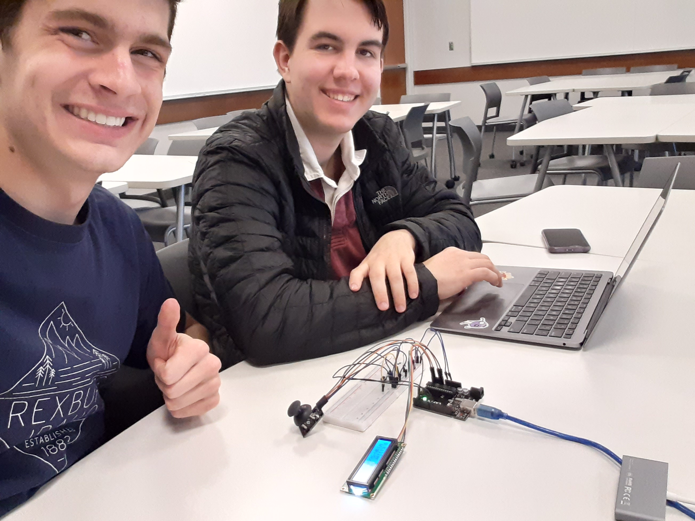
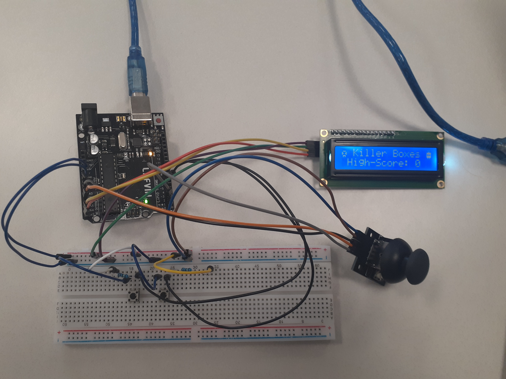
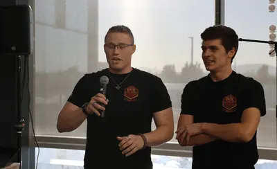
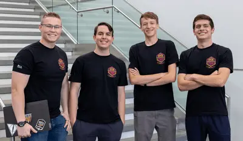
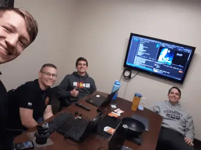

3 December 2022: Killer Boxes of doom!

Jack and I with the completed project
For a Computer Systems course final, Jack (a teammate from the hackathon) and I put our heads together and blew the assignment out of the water! We spent a good couple of days putting this little game together, and it was really fun! We decided to call it "Killer Boxes". You'd have to play it to understand.

Killer Boxes, all wired up!
At the start of the project, I figured I knew more or less how C's syntax worked, but I had some adjusting to do. No more optional semicolons or dynamically-sized arrays!
I learned a lot about C language even though it was such a small project. I am excited about it, since I know C will be useful if I ever want to get into low-level computing!
The code for the game is now proudly available on its Git repo.
12 October 2022: The Legend of Fresh Meat

Brief presentation of the project
The Hackathon award ceremony was today! Our team all showed up, and we set up a little stand like the rest of the teams and demonstrated our project. Then, the moment came. They began to announce the winners of the Hackathon.
And guess what? We WON. We won the whole event, took first place, against 18 groups. And the judges said it was by a landslide! I could not believe it. I didn't think it was possible.
I was very proud to have won the competiton. I know our hard work paid off! The hackathon was so fun, and I think I grew a lot! Even if we hadn't won, it still would go down as a highlight of my year! I think I'll compete in another one sometime!
8 October 2022: Hackathon!

The dream team. (From left: Bryant, Jack, Kent, and me!)
I decided to join a hackathon a few weeks ago here at BYU-Idaho. There ended up being nineteen groups of four. I got into a group of freshmen that I had seen from a few of my classes. We called our group "Fresh Meat" since we were the only team that was made entirely out of freshmen. Between me, Jack, Kent, and Bryant, only Bryant and I knew how to code. The event began at 5pm yesterday.
A highlight of the project was when Bryant and I first tried to get our two pieces of code (the UI and the analytical functions) to communicate to each other, and it ran smooth like butter on the first try! We had gotten pretty far by the time they closed the building at midnight, but we decided that we would need a little more time to get the project done (we also had to create a video to showcase the app during the 24 hours). So we found a study room in an apartment complex and worked all through the night (which was allowed but discouraged for sanity reasons), split up to shower at about 5am and met back up in the Science and Technology building for the remaining 11 hours of crunch time.

Team Fresh Meat, still truckin' at 4am!
By that time, we all felt pretty sleep-deprived, but we kept pushing on anyway. We had a solid and stable version of the app by about 12pm. The next few hours were spent on finishing touches and making a demo video. We all felt so tired! But we were able to get it all submitted nearly two hours before the deadline, which to me felt almost like a risky move. But the project really was done, right? There was no going back. At about 3:30pm, we all just headed our separate ways to rest up and enjoy whatever weekend we had left. The repo for the project can be found on GitHub.
19 September 2022: New website???
Here is something that has been in the works for over two months: A whole new web site for me to showcase the cool stuff I made! I am very excited to present it to you guys! Hope you enjoy! Try clicking on that sun icon in the top corner of the page to activate dark mode!
23 August 2022: png-to-2bpp

Me in 2-bits-per-pixel!
Today I worked quite a bit on an NES assembly tool: a png-to-2bpp converter, written in Python! I am not particularly familiar with Python, so I think it has been a good challenge so far!
- As of now it can convert any .png into an NES-compatible .2bpp file, using the brightness of pixels to determine between four different palette color slots, and of course writing that image data in a way the NES can understand.
- This is not necessarily a color depth reducer or color filter. It actually rearranges the graphics data into the NES's two-layered 8x8 tile format. The example shown here is somewhat outside the scope of the project (it was meant for sprite sheets, not whole images), but is still a cool demo.
- This tool may come with my SMB disassembly modernization project, depending on its practicality.